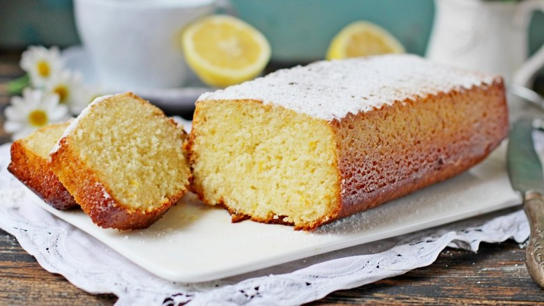

Ванильный кекс
Ингредиенты:
- 2 стакана муки
- 1 стакан сахара
- 1/2 стакана масла
- 1 стакан молока
- 3 яйца
- 2 ч. ложки разрыхлителя
- 1 ч. ложка ванили
Приготовление:
Смешайте все ингредиенты, вылейте в форму и выпекайте при 180°C около 30-40 минут.
Смешайте все ингредиенты, вылейте в форму и выпекайте при 180°C около 30-40 минут.
Смешайте все сухие ингредиенты, затем добавьте яйца и масло. Выпекайте при 180°C около 35-45 минут.
Смешайте все ингредиенты, вылейте в форму и выпекайте при 180°C около 40-50 минут.
Смешайте все ингредиенты, вылейте в форму и выпекайте при 180°C около 35-45 минут.
Смешайте все ингредиенты, добавьте орехи, вылейте в форму и выпекайте при 180°C около 40-50 минут.